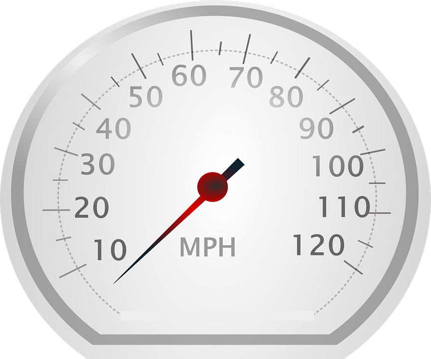

ACM-ICPC World Finals 2017 · Problem E

Sheila is a student and she drives a typical student car: it is old, slow, rusty, and falling apart. Recently, the needle on the speedometer fell off. She glued it back on, but she might have placed it at the wrong angle. Thus, when the speedometer reads s, her true speed is s + c, where c is an unknown constant (possibly negative).
Sheila made a careful record of a recent journey and wants to use this to compute c. The journey consisted of n segments. In the ith segment she traveled a distance of di and the speedometer read si for the entire segment. This whole journey took time t. Help Sheila by computing c.
Note that while Sheila’s speedometer might have negative readings, her true speed was greater than zero for each segment of the journey.
The first line of input contains two integers n (1 ≤ n ≤ 1 000), the number of sections in Sheila’s journey, and t (1 ≤ t ≤ 106), the total time. This is followed by n lines, each describing one segment of Sheila’s journey. The ith of these lines contains two integers di (1 ≤ di ≤ 1 000) and si (|si| ≤ 1 000), the distance and speedometer reading for the ith segment of the journey. Time is specified in hours, distance in miles, and speed in miles per hour.
Display the constant c in miles per hour. Your answer should have an absolute or relative error of less than 10−6.
3 5 4 -1 4 0 10 3
3.000000000
4 10 5 3 2 2 3 6 3 1
-0.508653377